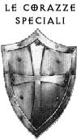
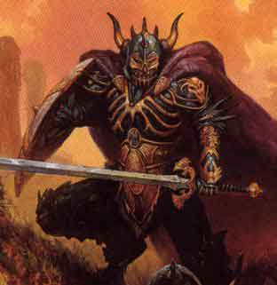
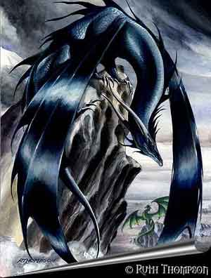
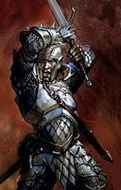

Oltre alle normali corazze, è possibile costruire corazze con materiali speciali, si tratta di corazze di pelle di drago o altri tipi di corazze. Per poterle costruire occorre possedere una speciale competenza :
Special Armorer (2 slots) Forza, - 3
Groups:
Warrior – Prerequisito: Armorer
Questa competenza può essere acquisita solo da chi già conosce la competenza Armorer. Coloro che hanno questa competenza sono specializzati nella costruzione di corazze con materiali inusuali (minerali speciali, pelli speciali, parti di mostri, ecc…). Per costruire una corazza avranno bisogno di una fucina funzionante come quella per costruire le normali corazze. Laddove applicabili si utilizzano le regole per costruire le corazze normali.
Alcune volte per la costruzione delle corazze sono utilizzati materiali diversi da quelli comuni, ciò può avvenire per tre ordini di ragioni, per la scarsità delle materie prime a disposizione, per costruire corazze estremamente lussuose o per utilizzare i migliori materiali esistenti.
Tutti i modificatori sotto riportati sono da calcolarsi per eccesso (si osservi che con i seguenti materiali non possono essere costruite corazze di tessuto). In particolare l'aggravio dei costi di produzione incide solo sul costo del metallo necessario a costruire la corazza e non del cuoio.
Si noti che qualora siano costruiti scudi con materiali speciali saranno applicati i moltiplicatori al valore di mercato ed ai punti corazza indicati in parentesi, mentre dove non previste parentesi si applicheranno le regolari modifiche.
| Materiale speciale | Costi di produzione | Valore di mercato | Modifica tiro salvezza |
| Argento | * 150 % | * 140 % | malus -1 |
| Bronzo | - 50 % | - 30 % | malus -1 |
| Arcanite | * 150 % |
* 200 % (*15) |
nessuno |
| Mithril* |
* 200 % |
* 300 % (*30) | bonus +1 |
| Adamantium | * 250 % | * 400 % (*45) | bonus +2 |
| Materiale speciale | Penalità al check | Tempi di costruzione | Modifica al peso | Modifica ai punti corazza |
| Argento | - 1 | + 20 % | - 10 % | -1 |
| Bronzo | nessuna | nessuna | - 15 % | -1 |
| Arcanite |
- 1 |
+ 30 % | nessuno | +1 (+2) |
| Mithril* |
- 2 |
+ 50 % | - 30 % | +2 (+4) |
| Adamantium | - 3 | + 70 % | nessuno | +3 (+6) |
*
Occorre osservare che le corazze costruite in
mithril essendo decisamente più leggere, oltre agli
altri modificatori, riducono anche di un punto la penalità
prevista dalla corazza alle prove di destrezza e del -1% la penalità ai tiri
salvezza su riflessi. Questa riduzione può
cumularsi con quella prevista dalle corazze di classe di peso leggera.
Si noti
che le
corazze di materiali speciali possono essere incantate
con alcuni incantamenti minori di natura magica strettamente connessi al
materiale speciale utilizzato per la costruzione della corazza stessa.
Minor Toxic Emission (Alteration, 250 xp, +1500 g.p.)
Le
corazze costruite in
Arcanite
possono
essere incantate al fine
Minor Undead Repulsion (Abjuration, 250 xp, +1500 g.p.)
Le
corazze costruite in
Mithril
possono
essere incantate al fine di esaltare il naturale potere di questo materiale di
accumulare energia positiva ostile alle creature la cui esistenza si basi
sull'energia negativa.
Una
volta al giorno chi indossa questa corazza
può attivare
il relativo potere. A
Minor Resistance to Damage (Abjuration, 250 xp, +1500 g.p.)
Le
corazze costruite in
Adamantium
possono
essere incantate al fine di esaltare il naturale potere di resistere ai danni
fisici proprio di questo materiale speciale.
Una
volta al giorno chi indossa questa corazza
può attivare
il relativo potere. A
CORAZZE DI SCAGLIE DI DRAGO

Le
corazze di scaglie di drago sono fra
le migliori corazze esistenti. Queste corazze hanno le seguenti caratteristiche:
·
Una
corazza di drago adeguatamente lavorata protegge con una classe armatura che
dipende dalla categoria del drago da cui la pelle è stata estratta secondo
questa tavola:
|
Categoria drago |
Classe Armatura |
|
1 |
6 |
|
2 |
6 |
|
3 |
|
|
4 |
|
|
5 |
|
|
6 |
4 |
|
7 |
3 |
|
8 |
3 |
|
9 |
2 |
|
10 |
2 |
|
11 |
1 |
|
12 |
1 |
·
Tutte le
corazze di pelle di drago hanno un peso pari a 25 lbs.
·
Le
corazze di drago hanno un numero di punti corazza che dipende dalla categoria di età del
drago dalla cui pelle si è costruita la corazza, secondo la seguente tabella:
|
Categoria
di età |
Punti
corazza possibili |
|
1-2 |
6 |
|
3-4 |
7 |
|
5-6 |
8 |
|
7-9 |
9 |
|
10-12 |
10 |
· Tutte le corazze di drago possono essere tenute per molto tempo senza subire alcuna penalità, ma non è possibile riposarsi con indosso tali corazze (si considerano per tutte le finalità corazze di scaglie).
Per
costruire una corazza di drago occorre innanzi tutto procurarsi la pelle del
drago stesso. A seconda dell’età del drago dal suo corpo potranno recuperarsi
(con la competenza skinning) pelli per costruire un numero di corazze che
cambia a seconda dell'età del drago (si noti che qualora sia possibile
recuperare più pelli chi ha skinning deve tirare il check per ogni
possibile pelle).
|
Categoria
di età |
Numero
di corazze possibili |
|
1-3 |
1 |
|
4-6 |
2 |
|
7-9 |
3 |
|
10-12 |
4 |
Mediamente uno skinner che riesca a recuperare una pelle dal corpo di un drago dovrà essere ricompensato per un valore pari al 10% del valore di ogni pelle che riesce a recuperare.
Il valore di mercato, invece, della pelle ripulita varia a seconda della categoria del drago e del tipo di drago. Il costo base indicato nella tabella va applicato il moltiplicatore che dipende dal tipo di drago. Indipendentemente dalla sua tipologia, il peso di ogni pelle di drago ripulita è pari a 6 libbre.
|
Categoria drago |
Costo base |
Skinning modifier |
Armorer modifier |
|
1 |
|
none |
none |
|
2 |
|
|
|
|
3 |
|
|
|
|
4 |
|
|
|
|
5 |
|
|
|
|
6 |
1600 | -1 | -2 |
|
7 |
1750 | -2 | -3 |
|
8 |
2000 | -2 | -3 |
|
9 |
2350 | -2 | -4 |
|
10 |
2800 | -3 | -4 |
|
11 |
3300 | -3 | -5 |
|
12 |
4000 | -3 | -5 |
|
Tipo di drago |
Moltiplicatore |
|
Black |
1.2 |
|
|
1.6 |
|
Green |
1.4 |
|
Red |
1.8 |
|
White |
1.0 |
|
Ametist |
1.8 |
|
Cristal |
1.1 |
|
Emerlad |
1.4 |
|
Saffire |
1.6 |
|
Topaz |
1.2 |
|
Brass |
1.3 |
|
Bronze |
1.7 |
| Copper | 1.5 |
| Gold | 2.1 |
| Silver | 2.0 |
| Brown | 1.75 |
| Cloud | 1.75 |
| Deep | 1.75 |
| Mercury | 1.15 |
| Mist | 1.15 |
| Shadow | 1.35 |
| Steel | 1.15 |
| Yellow | 1.55 |
| Turtle | 1.55 |
|
Mountain |
1.0 |
|
Reef |
1.2 |
Una volta rimossa e pulita la pelle occorrerà pagare la costruzione della corazza.
Il tempo di costruzione è pari a 25 giorni per categoria di età del drago.
Per far costruire una corazza di drago occorre pagare il lavoro di uno special armorer. Il rischio di produzione è ovviamente a carico di chi vuole farsela costruire.
Le corazze di pelle di drago possono a loro volta essere incantate per essere rese magiche, oltre ad acquisire i bonus difensivi possono ottenere una protezione simile a quella che aveva il drago originario. Il bonus magico massimo che una corazza di pelle di drago può ottenere varia al variare della categoria di età del drago stesso:
|
Categoria
di età |
Max.
bonus magico |
|
1-3 |
+1 |
|
4-6 |
+2 |
|
7-9 |
+3 |
|
10-12 |
+4 |
Per calcolare il valore di mercato di una corazza di drago si consideri un costo del lavoro (comprensivo della fucina) pari a 3,5 g.p. al giorno + il 133 % del valore della pelle necessaria alla costruzione.
RIPARARE
LE CORAZZE DI PELLE DI DRAGO
Per
riparare le corazze di pelle di drago occorrono materiali speciali (scaglie di
drago ecc…) per cui questo diventa un processo lungo e costoso. Per riparare
queste corazza occorre la competenza Special Armorer e una fucina.
I tempi riparazione sono sempre uguali
a 4 giorni per punto.
Per
il resto si applicano le regole per riparare le corazze normali.
INCANTAMENTI MINORI DI NATURA MAGICA DELLE CORAZZE DI DRAGO
Minor Brightness (Alteration, 250 xp, +1500 g.p.)
La corazza di Crystal Dragon così incantata, una volta al giorno, può splendere riflettendo la luce del sole ed abbagliare tutti coloro si trovino entro 20 metri di distanza da lui. Si noti che per poter usare questo potere chi indossa la corazza deve trovarsi illuminato alla luce del sole o da una fonte di luce equivalente (come un continual light). Quando è attivato il potere, tutti coloro si trovano entro 20 metri dal possessore della corazza e siano in grado di vedere (non funziona su chi non ha organi visivi sensibili alla luce, come non morti, costruiti, creature cieche anche temporaneamente, oppure quelle come amebe o creature similari) devono effettuare un tiro salvezza contro paralisi od essere accecate per 1d6+3 rounds. Per attivare il potere è richiesta un'azione complessa (con il solo componente vocale della parola magica di attivazione e senza che sia richiesta la concentrazione) che si svolge con un fattore iniziativa pari +3.
Minor Luck (Summoning, 250 xp, +1500 g.p.)
La corazza di Crystal Dragon così incantata, una volta al giorno, può donare a chi la indossa la fortuna tipica dei Draghi di Cristallo. Attivare il potere è una free action e lo stesso si considera attivato già dal round in cui il possessore dichiara di volerlo usare nella fase delle intenzioni. L'attivazione che non necessita di concentrazione ma di una componente vocale (parola magica di attivazione) impone una penalità di +1 alle successive azioni del round. Una volta attivato il potere, per 1d4+1 rounds, il personaggio potrà usufruire per un solo tiro al round (sia proprio che effettuato direttamente contro costui, non quindi per azioni che coinvolgono simultaneamente anche altre creature come il lancio di una fireball) di un bonus pari a +o-1 (+o-5%) al fine di modificare un risultato a lui non favorevole (dopo aver quindi tirato), si consideri però che i risultati acritici e critici non potranno né essere evitati né ottenuti utilizzando questo bonus.
Minor Frost Resistance (Alteration, 250 xp, +1500 g.p.)
La
corazza di White Dragon
può essere incantata facilmente per donare una leggera resistenza
al freddo (sia
esso di origine magica che normale):
1) Chi la indossa e tutti i suoi oggetti ricevono +1 contro tutti i tiri
salvezza contro freddo.
2) Ogni volta che chi indossa questa corazza subisce un attacco da freddo vi è il 33% che la corazza assorba 1/2
dei danni subiti.
3) La corazza non subisce alcuna perdita di punti corazza per danni provocati
dal freddo.
Minor Thorns (Alteration, 250 xp, +1500 g.p.)
La corazza di Mountain Dragon così incantata, una volta al giorno, può far fuoriuscire pericolosi aculei in grado di difendere chi la indossa. Attivare il potere è una free action e lo stesso si considera attivato già dal round in cui il possessore dichiara di volerlo usare nella fase delle intenzioni. L'attivazione che non necessita di concentrazione ma di una componente vocale (parola magica di attivazione) impone una penalità di +4 alle successive azioni del round. Una volta attivato per 2d3 rounds il personaggio otterrà l'abilità mostruosa "spine".
|
SPINE (Moderate Special Ability) : Il corpo della creatura è cosparso da duri e pericolosi aculei. Questi aculei, oltre a rappresentare una corazza naturale per la creatura, si drizzano in combattimento con la conseguenza che tutti coloro attaccano questa creatura in corpo a corpo con armi (ad eccezione delle Polearm) od attacchi fisici corrono il rischio di ferirsi ogni volta che effettuano un attacco. In particolare, ogni volta che una creatura attacca in corpo a corpo questo essere mostruoso, la stessa dovrà superare un tiro salvezza contro pietrificazione modificato dal valore di reaction adjustment della destrezza. A questo tiro non si applicheranno i modificatori dovuti alla differenza di livello tra il mostro e la creatura attaccante. Se l'attacco è effettuato con un'arma di taglia large la creatura riceverà un bonus di +1 al tiro salvezza, se l'attacco è effettuato con un'arma di taglia medium la creatura non riceverà modificatori al tiro salvezza, se l'attacco è effettuato con un'arma di taglia small la creatura riceverà un malus di -1 al tiro salvezza, se l'attacco è effettuato con attacchi fisici la creatura riceverà un malus di -2 al tiro salvezza. Il tiro salvezza deve essere ripetuto per ogni singolo attacco effettuato contro il mostro. La creatura, inoltre, può impiegare punti combattimento per ricevere bonus a tali tiri salvezza. Ogni 3 punti di combattimento impiegati la creatura riceverà un bonus di +1 al tiro salvezza su quel singolo attacco. Non possono essere impiegati più di 9 punti combattimento (+3 al tiro salvezza) su ogni singolo attacco effettuato. I punti combattimento vanno utilizzati direttamente prima del lancio del dado relativo al tiro salvezza che la creatura desidera migliorare. Si tratta di una modalità speciale di utilizzo dei punti combattimento che non incide (ad esempio per quanto attiene al cumulo) sulle normali regole concernenti l'uso dei punti combattimento. Ogni volta che la vittima fallisce il tiro salvezza la stessa subisce 1d3 danni da punta (perforazione). Se il tiro salvezza riesce con un successo critico la creatura non dovrà effettuare alcuna prova per i due successivi attacchi effettuati nei confronti del mostro nel medesimo combattimento. Se il tiro salvezza fallisce con un fallimento critico il danno da punta prodotto sarà considerato un danno critico. |
Minor Acid Resistance (Abjuration, 250 xp, +1500 g.p.)
La
corazza di Black Dragon
può essere incantata facilmente per donare una leggera resistenza all'acido (sia
esso di origine magica che normale):
1) Chi la indossa e tutti i suoi oggetti ricevono +1 contro tutti i tiri
salvezza contro acido.
2) Ogni volta che chi indossa questa corazza subisce un attacco da acido vi è il 33% che la corazza assorba 1/2
dei danni subiti.
3) La corazza non subisce alcuna perdita di punti corazza per danni provocati
dall'acido.
Minor Acid Blood (Conjuration, 250
xp, +
La corazza di Black Dragon può essere incantata facilmente per ottenere questo potere speciale utilizzabile 1 volta al giorno. Quando questo potere è attivato (si considera una free action che vale dall'inizio del round di attivazione, tale attivazione richiede l'utilizzo di componente vocale, ossia la parola magica di attivazione, ma non il mantenimento della concentrazione e rallenta le azioni nel round di attivazione imponendo una penalità di +3 all'iniziativa) per 1 turno chiunque colpisca in corpo a corpo chi indossa la corazza (superando la sua classe armatura) verrà colpito da uno spruzzo di vapore acido (si tratta di acido di origine non magica) e subirà 1d4 danni da acido per colpo inflitto.
CORAZZE DI SCAGLIE DI LUCERTOLA
| Tipo di lucertola | Modificatore skinning | Numero di pelli | Valore della pelle e peso |
| Lizard Man | - 1 | 1/3 di corazza | 25 g.p. / 2 libbre |
| Lizard, Fire / Basilisk | - 3 / - 2 | 1 / 1d2 | 250 g.p. / 7,5 libbre |
| Lizard / Iguana Giant | - 1 | 2 / 1d3+2 | 75 g.p. / 6 libbre |
| Lizard, Minotaur | - 2 | 3 | 100 g.p. / 10 libbre |
| Lizard, Subterranean | - 1 | 2 | 80 g.p. / 5 libbre |
| Lizard Man | Lizard, Fire / Basilisk | Lizard / Iguana Giant | Lizard, Min. | Lizard, Subt. | |
| AC | 6 | 5 | 6 | 6 | 6 |
| Peso | 25 | 30 | 25 | 40 | 20 |
| Punti Corazza | 6 | 7 | 6 | 8 | 5 |
| Check | none | - 3 | none | - 2 | - 3 |
| Valore | 160 g.p. | 750 g.p. | 160 g.p. | 250 g.p. | 250 g.p. |
| Riparazione | 1 al giorno | 1 ogni 2 giorni | 1 al giorno | 1 ogni 2 giorni | 1 al giorno |
Tutte le armature di scaglie di lucertole giganti possono considerarsi corazze con cui è possibile anche dormire e riposare, mentre in tutti gli altri aspetti queste corazze saranno considerate come comuni cotte a scaglie. L'unica eccezione è costituita dalla corazza di Lizard Subterranean la può essere indossata dai ladri permettendo loro di utilizzare le abilità della classe come se stessero indossando una comune cuoio rinforzata.
Alcune di queste corazze inoltre possono essere incantate facilmente e con un procedimento abbreviato per ottenere dei benefici strettamente connessi alla creatura da cui la pelle è stata recuperata. Gli incantamenti più comuni sono i seguenti:
Minor Fire Resistance (Abjuration, 250 xp, +1500 g.p.)
La
corazza di Lizard, Fire può essere incantata facilmente per donare una leggera resistenza al fuoco (sia
esso di origine magica che normale):
1) Chi la indossa e tutti i suoi oggetti ricevono +1 contro tutti i tiri
salvezza contro fuoco.
2) Quando si subisce un attacco da fuoco vi è il 33% che la corazza assorba 1/2
dei danni subiti.
3) La corazza non subisce alcuna perdita di punti corazza per danni provocati
dal fuoco.
Lizard Scale of Climbing (Alteration, 250 xp, +1500 g.p.)
La
corazza di Lizard, Subterranean
può essere incantata facilmente per donare a chi la indossa una migliore
capacità di scalare:
1) Chi la indossa ottiene un bonus del 15% alla propria possibilità di
scalare pareti
Si noti che tale corazza non dona l'abilità dei vagabondi climb walls ma
migliora solo la percentuale di successo nelle scalate.
CORAZZE DI SCAGLIE DI DRAKES
| Tipo di drake | Modificatore skinning | Numero di pelli | Valore della pelle |
| Ancient Drake | - 1 | 2 | 100 g.p. / 7,5 libbre |
| Coastal Drake | - 2 | 3 | 275
g.p. / |
| Flame Drake | - 2 | 2 | 250
g.p. / |
| Golden Drake | - 3 | 2 | 300
g.p. /
|
| Lake - Firebreath - Mountain Drake | - 3 | 4 (Lake) - 2 (Firebreath e Mountain) | 350
g.p. /
|
| Swamp Drake | - 2 | 2 | 275 g.p.
/
|
| Ancient Drake | Coastal Drake |
Flame Drake |
Golden Drake |
Lake - Firebreath - Mountain Drake |
Swamp Drake |
||
| AC | 5 | 4 | 4 | 4 | 4 | 4 | |
| Peso | 30 | 30 | 30 | 25 | 35 | 35 | |
| Punti Corazza | 5 | 7 | 6 | 6 | 8 | 7 | |
| Check | - 2 | - 3 | - 3 | - 3 | - 3 | - 3 | |
| Valore | 250 g.p. | 875 g.p. | 750 g.p. | 900 g.p. | 1000 g.p. | 800 g.p. | |
| Riparazione | 1 ogni 3 giorni | 1 ogni 3 giorni | 1 ogni 3 giorni | 1 ogni 3 giorni | 1 ogni 3 giorni | 1 ogni 3 giorni |
Tutte le armature di scaglie di drakes possono considerarsi con le quali non si riesce a dormire o a riposarsi ma si possono tenere per molto tempo senza penalità. Laddove non specificato si considereranno come scale mail.
Alcune di queste corazze inoltre possono essere incantate facilmente e con un procedimento abbreviato per ottenere dei benefici strettamente connessi alla creatura da cui la pelle è stata recuperata. Gli incantamenti più comuni sono i seguenti:
Minor Fire Resistance (Abjuration, 250 xp, +1500 g.p.)
La
corazza di Ancient Drakes,
quella di
Flame Drakes
1) Chi la indossa e tutti i suoi oggetti ricevono +1 contro tutti i tiri
salvezza contro fuoco.
2) Quando si subisce un attacco da fuoco vi è il 33% che la corazza assorba 1/2
dei danni subiti.
3) La corazza non subisce alcuna perdita di punti corazza per danni provocati
dal fuoco.
Minor Frost Resistence (Abjuration, 250 xp, +1500 g.p.)
Le
corazze di
1) Chi la indossa e tutti i suoi oggetti ricevono +1 contro tutti i tiri
salvezza contro freddo.
2) Quando si subisce un attacco da freddo vi è il 33% che la corazza assorba 1/2
dei danni subiti.
3) La corazza non subisce alcuna perdita di punti corazza per danni provocati
dal freddo.
Golden Drake Scale of Defence (Abjuration, 250 xp, +1500 g.p.)
La corazza di Drake Golden può essere incantata facilmente per donare a chi la indossa un potere difensivo simile a quello del drake con le cui scaglie è stata costruita la corazza. Una volta al giorno chi la indossa può attivare il potere e far si che le scaglie della corazza divengano lucenti. Per 4 rounds la corazza difenderà 3 punti di classe armatura supplementari, attivare il potere richiede un'azione (con il solo componente vocale della parola magica di attivazione e senza che sia richiesta la concentrazione) che si svolge con un fattore iniziativa pari +3.
Minor Underwater Combat (Alteration, 250 xp, +1500 g.p.)
La corazza di Coastal e Lake Drakes può essere incantata facilmente per donare a chi la indossa la possibilità di combattere sotto la superficie dell'acqua senza penalità. Una volta al giorno chi indossa questa corazza può attivare il relativo potere. Per 1 turno chi indossa la corazza potrà combattere, in corpo a corpo, senza subire le penalità del combattimento sotto la superficie (si noti che questo potere non permette di respirare sott'acqua), attivare il potere richiede un'azione (con il solo componente vocale della parola magica di attivazione e senza che sia richiesta la concentrazione) che si svolge con un fattore iniziativa pari +3.
Minor Acid Resistance (Abjuration, 250 xp, +1500 g.p.)
La
corazza di Swamp
Drake
può essere incantata facilmente per donare una leggera resistenza all'acido (sia
esso di origine magica che normale):
1) Chi la indossa e tutti i suoi oggetti ricevono +1 contro tutti i tiri
salvezza contro acido.
2) Quando si subisce un attacco da acido vi è il 33% che la corazza assorba 1/2
dei danni subiti.
3) La corazza non subisce alcuna perdita di punti corazza per danni provocati
dall'acido.
CORAZZA DI BOG SERPENT
Tutte
le armature di
|
Modello |
AC |
Costo
|
Peso |
Punti
Corazza |
|
Corazza di
Bog Serpent |
|
375 g.p. |
30 |
7 |
I tempi di riparazione di questa corazza sono 1 punto ogni 2 giorni di lavoro.
Minor Acid Resistance (Abjuration, 250 xp, +1500 g.p.)
La
corazza di
1) Chi la indossa e tutti i suoi oggetti ricevono +1 contro tutti i tiri
salvezza contro acido.
2) Ogni volta che chi indossa questa corazza subisce un attacco da acido vi è il 33% che la corazza assorba 1/2
dei danni subiti.
3) La corazza non subisce alcuna perdita di punti corazza per danni provocati
dall'acido.
Minor Acid Blood (Conjuration, 250 xp, +2500 g.p.)
La
corazza di
CORAZZA DI SCAGLIE DI VIVERNA
Tutte le armature di Viverna possono considerarsi con le quali non si riesce a dormire o a riposarsi ma si possono tenere per molto tempo senza penalità. Laddove non specificato si considereranno come scale mail.
|
Modello |
AC |
Costo
|
Peso |
Punti
Corazza |
|
Corazza di
Viverna |
|
2000 g.p. |
33 |
7 |
I tempi di riparazione di questa corazza sono 1 punto ogni 3 giorni di lavoro.
Minor Poison Resistance (Alteration, 250 xp, +1500 g.p.)
La corazza di Viverna può essere incantata facilmente per donare a chi la indossa una resistenza al veleno. In particolare, chi indossa la corazza, riceverà costantemente un bonus di +2 a tutti i tiri salvezza contro veleno ogni volta che subisce l'iniezione di un veleno di tipo insinuativo (il beneficio non si applica, quindi, per i veleni a contatto, ad ingestione e per i gas venefici).
CORAZZA DI RAGE DRAKE
Tutte le armature di Rage Drake possono considerarsi con le quali non si riesce a dormire o a riposarsi ma si possono tenere per molto tempo senza penalità. Laddove non specificato si considereranno come scale mail.
|
Modello |
AC |
Costo
|
Peso |
Punti
Corazza |
|
Corazza di
Rage Drake |
|
1500 g.p. |
44 |
6 |
I tempi di riparazione di questa corazza sono 1 punto ogni 3 giorni di lavoro.
Minor Survival Rage (Alteration, 250 xp, +2000 g.p.)
La
corazza di Rage Drake
può
essere incantata facilmente per donare a chi la indossa una furia di
sopravvivenza quando combatte molto ferito:
A
partire dal round successivo nel quale la creatura subendo una qualsiasi ferita
si trova al 50% o meno dei suoi punti ferita, costei entra in un leggero stato
di furia ed inizia a combattere in modo più cruento per tutto il resto del
combattimento. In particolare, chi indossa la corazza, riceverà un bonus di +1
al dado base tirato per le ferite di tutti i suoi attacchi effettuati in corpo a
corpo. Per
ogni nuovo combattimento occorre che la creatura subisca una nuova ferita prima
di poter entrare in questo particolare stato di furia (sempre che abbia il 50% o
meno dei suoi punti ferita).
Tutte
le armature di
|
Modello |
AC |
Costo
|
Peso |
Punti
Corazza |
|
Corazza di
Hydra |
|
2500 g.p. |
35 |
8 |
I tempi di riparazione di questa corazza sono 1 punto ogni 3 giorni di lavoro.
Minor Acid Resistance (Abjuration, 250 xp, +1500 g.p.)
La
corazza di
1) Chi la indossa e tutti i suoi oggetti ricevono +1 contro tutti i tiri
salvezza contro acido.
2) Ogni volta che chi indossa questa corazza subisce un attacco da acido vi è il 33% che la corazza assorba 1/2
dei danni subiti.
3) La corazza non subisce alcuna perdita di punti corazza per danni provocati
dall'acido.
CORAZZA DI PLATED WORM/CENTIPEDE
Si
tratta di un'armatura con
la quale non si riesce a dormire o a riposarsi ma che può essere indossata per molto
tempo senza penalità.
|
Modello |
AC |
Costo
|
Peso |
Punti
corazza |
|
Corazza di
|
4 |
600
(300) g.p. |
25 |
6 |
Il
valore delle parti di carapace adeguatamente ripulite (prova di skinning con penalità di -2) è pari a 150 monete d'oro
CORAZZA DI TARANTOLA GIGANTE
Si
tratta di un'armatura con
la quale non si riesce a dormire o a riposarsi ma che può essere indossata per molto
tempo senza penalità.
|
Modello |
AC |
Costo
|
Peso |
Punti
corazza |
|
Corazza
di Tarantola Gigante |
4 |
500
(250) g.p. |
27 |
5 |
Il
valore delle parti di carapace adeguatamente ripulite e tagliate (prova di
skinning con penalità di -2) è pari a 100 monete d'oro
Questa corazza può essere incantata facilmente con un incantamento minore di natura magica strettamente connesso alla creatura da cui il carapace è stato recuperata. L'incantamento più comune è il seguente:
Minor Immunity to Poisonous Bites (Abjuration, 250 xp, +1500 g.p.)
La
corazza di Tarantola Gigante può essere incantata per donare una
particolare resistenza magica ai morsi velenosi:
1) Quando chi la indossa viene morso o punto da una qualsiasi creatura in
grado di iniettare un veleno di tipo insinuativo, vi è il 33% che la corazza
neutralizzi questo veleno rendendolo innocuo (la vittima non deve nemmeno
effettuare il tiro salvezza). Il tiro va ripetuto per ogni singolo morso o
puntura.
Si noti che tale incantamento non protegge dal contatto con altri tipo di
veleno (ad es. da gas venefici, da veleno a contatto o da quello ingerito) e da
veleni insinuativi che non sono iniettati (come nel caso di veleni cosparsi
sulle armi).
|
 |
Si
tratta di un'armatura che
può essere indossata per un periodo di tempo limitato.
La Gorgon Armor, essendo costituita da varie scaglie e placche metalliche, impone una penalità di -2 alle prove di destrezza ed una penalità di +4% ai tiri salvezza su riflessi.
Il
valore delle |
Minor Acid Resistance (Abjuration, 250 xp, +1500 g.p.)
La
Gorgon Armor
può essere incantata facilmente per donare una leggera resistenza all'acido (sia
esso di origine magica che normale):
1) Chi la indossa e tutti i suoi oggetti ricevono +1/+5% contro tutti i tiri
salvezza contro acido.
2) Ogni volta che chi indossa questa corazza subisce un attacco da acido vi è il 33% che la corazza assorba
il 50%
dei danni subiti (arrotondati per eccesso).
3) La corazza non subisce alcuna perdita di punti corazza per danni provocati
dall'acido.
CORAZZA DEL MANGIATORE DI CORPI
Statistiche di Skinning
Modificatore alla prova di skinning: -
3
Numero di pelli per creatura: sufficienti a creare 1/2 corazza
Valore di mercato della singola pelle: 75 g.p.
Peso di un singola pelle: 5,5 libbre
|
Modello |
AC |
Costo
|
Peso |
Punti
corazza |
|
Corazza di
|
|
350 g.p. |
22 |
7 |
I tempi di riparazione di questa corazza sono 1 punto ogni giorno di lavoro.
Queste corazze, inoltre, possono essere incantate facilmente con il seguente incantamento minore:
Minor Damage Reduction (Abjuration, 250 xp, +1500 g.p.)
Una volta al giorno chi indossa questa corazza può attivare il relativo potere. Attivare il potere richiede un'azione complessa (con il solo componente vocale della parola magica di attivazione e senza che sia richiesta la concentrazione) che si svolge con un fattore iniziativa pari +3. Una volta attivato il potere, per 6 rounds (nei quali andrà compreso il round di attivazione per la parte a questa successiva) chi indossa la corazza vedrà ridurre i danni subiti (potendoli anche azzerare) di 3 punti danno per ogni singolo attacco fisico da botta, di 2 punti danno per ogni singolo attacco fisico da taglio e di 1 punto danno per ogni singolo attacco fisico da punta. Questo benefico non si estende ai danni diversi da quelli fisici (come i danni da fuoco ed i danni di molte magie i cui effetti non possono essere ricondotti a quelli di danni fisici).
In
millenni di pratica alcune razze hanno acquisito un particolare metodo di
costruzione delle corazze. Si tratta sempre di corazze normali ma costruite con
una fattura particolare che ne modifica alcune caratteristiche. Per costruirle
occorrono le normali competenze ma solo i corazzieri delle varie razze conoscono
i segreti per costruire corazze con la loro particolare fattura. Si noti che
costoro potrebbero comunque costruire corazze con la fattura standard anche
perché solitamente la fattura razziale è più costosa.
CORAZZE
IN FATTURA ELFICA
La
fattura elfica si contraddistingue per la leggerezza delle loro corazze. Una
corazza costruita in fattura elfica ottiene i seguenti modificatori:
Penalità supplementare di +2 alla prova di produzione;
+
25 % ai tempi di produzione
- 20 % al peso del corazza;
+ 33 % al valore finale della corazza;
Riduzione di un punto della penalità alle prove di destrezza
e del -2% della penalità ai tiri salvezza su riflessi subite da chi indossa la
corazza.
CORAZZE
IN FATTURA NANICA
La
fattura nanica si contraddistingue per la resistenza delle loro corazze. Una
corazza costruita in fattura nanica ottiene i seguenti modificatori:
Penalità
supplementare di +1 alla prova di produzione;
+
20 % ai tempi di produzione;
+
10 % al peso della corazza
+
30
% a tutti i costi di produzione
+ 50 % al valore finale della corazza;
+
1
punto corazza
ELVEN CHAIN MAIL
STATISTICHE DI GIOCO
Essendo già una corazza di fattura speciale non è possibile operare alcuna modificazione alle sue statistiche di costruzione (come la classe di peso, le fatture speciali ed i metalli essendo necessariamente forgiata in mithril).
Fattore di protezione : AC 5
Peso : 20 lbs.
Punti corazza : 10
Tiro salvezza base se incantata : 8
Tempo di riparazione a punto corazza : 3 giorni
Costo di riparazione a punto corazza : 50 g.p.
Sebbene sia una corazza metallica la chain mail elfica può essere indossata tutta la giornata senza limiti di tempo, ma non sarà possibile riposare con questa corazza.
Gli utenti di magia multi-classe possono lanciare incantesimi indossando questa corazza ed i thief possono utilizzare le loro abilità ricevendo penalità ridotte, inoltre chi indossa questa corazza non riceve alcuna penalità alle proprie prove di destrezza. Questa corazza, infine, non influisce sull'abilità elfica di muoversi nella foresta senza farsi notare.
Alle
corazze magiche si applicano le seguenti regole supplementari:
Peso
delle corazze magiche
Il
peso delle corazze magiche è ridotto di una percentuale (calcolata per eccesso)
pari a 10% * bonus magico della corazza alla AC.
Danneggiare
una corazza magica
A differenza rispetto le normali corazze, non è detto che ogni colpo danneggi una corazza magica. Per ogni colpo subito, infatti, una corazza magica avrà la possibilità di resistere al danno effettuando un tiro salvezza che varia a seconda della corazza come riportato in questa tabella:
|
Modello |
Tiro
salvezza base contro danno fisico |
|
Piastre
Completa * |
7 |
|
Piastre
da Guerra * |
8 |
|
Scaglie di Drago |
8 |
|
Gorgon Armor |
9 |
|
Piastre |
9 |
|
Scaglie di Viverna |
9 |
|
Bande |
10 |
|
Piastre
di Bronzo |
10 |
|
Scaglie di Rage Drake |
10 |
|
Anelli |
11 |
|
Scaglie di Drakes |
11 |
|
Tarantola Gigante |
11 |
|
Maglia
di Ferro |
11 |
|
Squame di Bog Serpent |
11 |
|
Squame di Lucertola |
12 |
|
|
12 |
|
Scudo
da Corpo |
12 |
|
Scudo
Medio |
12 |
|
Scudo
Piccolo |
12 |
|
Scudo
Rotella |
12 |
|
Pelli
Bollite |
13 |
|
Cotta
a Scaglie |
13 |
|
Cuoio
Rinforzata |
14 |
|
Cuoio
|
15 |
|
Vestiti
Imbottiti |
16 |
A questo tiro vanno aggiunti i modificatori dovuti alla magia della corazza che è pari a +1 ogni 500 xp di potenza magica fino ad un massimo bonus di +5. Il tiro salvezza va effettuato per ogni attacco e non per ogni punto, qualora un attacco produca più punti danno si effettuerà, quindi, un unico tiro salvezza per tutti questi.
Riparare
una corazza magica
Riparare
una corazza magica è molto complicato. La riparazione deve essere minuziosa
inoltre occorrono dei preparati e dei costosi solventi che sono prodotti nei
laboratori magici. Per effettuare le riparazioni non occorre la presenza di un
esperto di magia ma unicamente di un armaiolo che abbia la competenza Special
Armorer, si noti il fatto che per costruire una corazza magica questa
competenza non è richiesta (a meno che non si tratti di corazza in materiale
speciale) inoltre dopo la costruzione della corazza (che deve essere di una
qualità eccezionale) la stessa viene incantata nei laboratori magici da utenti
di magia (nella fase dell'incantamento l'armaiolo non svolge ruoli
fondamentali); una volta incantata però non sarà più necessario al fine di
riparare la corazza riportarla al laboratorio ma sarà sufficiente che un
armaiolo in grado di ripararla (e questa volta è richiesta la conoscenza di
tecniche di riparazione avanzate e speciali) utilizzi i composti provenienti da
un laboratorio magico. In termine di regole, i tempi di
riparazione sono aumentati del 100% (o del 50% se la corazza è incantata solo
con un minor enchantment) di quelli necessari per riparare una
equivalente corazza non magica e i costi di riparazione
di ogni punto sono uguali:
* Costo dei materiali di riparazione comuni della corazza
* 0.2 g.p. in materiali magici (0,1 g.p. se la corazza è incantata solo con un minor enchantment) * xp
di valore magico.
* 2 g.p. al giorno spese del corazziere (deve possedere Armorer e Special
Armorer)
* 1 g.p. al giorno per le spese della fucina (non per le corazze di tessuti)
Si
noti che anche le corazze magiche perdono punti corazza in maniera permanente
seguendo le regole delle normali corazze.